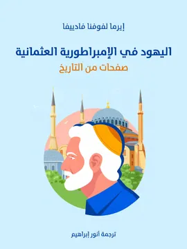

اليهود في الإمبراطورية العثمانية: صفحات من التاريخ

قراءة عربية أصلية محددة النطاق في الصفحات 9 إلى 14 من ملف PDF المرتبط، وليست تلخيصا كاملا للكتاب. نناقش ما تدعمه هذه المقاطع فقط.
دفاتر الجزية وأرشيف الطوائف: تاريخ يهود الدولة العثمانية
تستهل المؤلفة بالإشارة إلى أن المصادر المكتوبة عن اليهود، وهم من «أهل الكتاب»، معروفة منذ أقدم العصور، وأن الطوائف اليهودية حفظت في أثناء ترحالها الطويل الاضطراري عبر العالم الوثائق التاريخية والقانونية والمراجع الدينية جنبًا إلى جنب مع أغراض العبادة، وإن التهم لهيب الحرائق والأوبئة كثيرًا من هذه الكتابات. ثم تحدد موضوع الكتاب: تاريخ الطوائف اليهودية إبان الحكم العثماني على امتداد مساحات شاسعة عاشت فيها هذه الطوائف طويلًا قبل وصول الأتراك، وكيف ازدادت أعدادها بسرعة في القرنين الخامس عشر والسادس عشر بفضل تدفق اللاجئين القادمين من الدول الأوروبية، وأن غير المسلمين كانوا يدفعون الجزية لبيت المال، وأن الأرشيف العثماني يحتفظ بدفاتر تعداد السكان مع الديانة وحجم الأملاك والفئة الضريبية لكل محافظة. وتروي كيف بدأ البحث العلمي في وثائق الأرشيف عقب ثورة تركيا الفتاة عام ١٩٠٨ بتأسيس الجمعية التاريخية العثمانية، وما لقيه عملها من تعطيل إبان الحرب العالمية الأولى ثم استئنافه في الثلاثينيات.
زاوية وحدود القراءة
قراءة موجزة من ص ٩ إلى ص ١٤ من أصل ٤٥٨ صفحة، تعرض المقدمة؛ مصادر تاريخ الطوائف اليهودية في العهد العثماني وأراشيف الدولة، لا الكتاب كاملًا.
الطبعة والقراءة
هذه النسخة من الكتاب صادرة ومتاحة مجانًا بموجب اتفاق قانوني بين مؤسسة هنداوي والسيد الدكتور أنور إبراهيم.
تنزيل PDF المجاني ↓ القراءة والمصدر الرسمي ↗